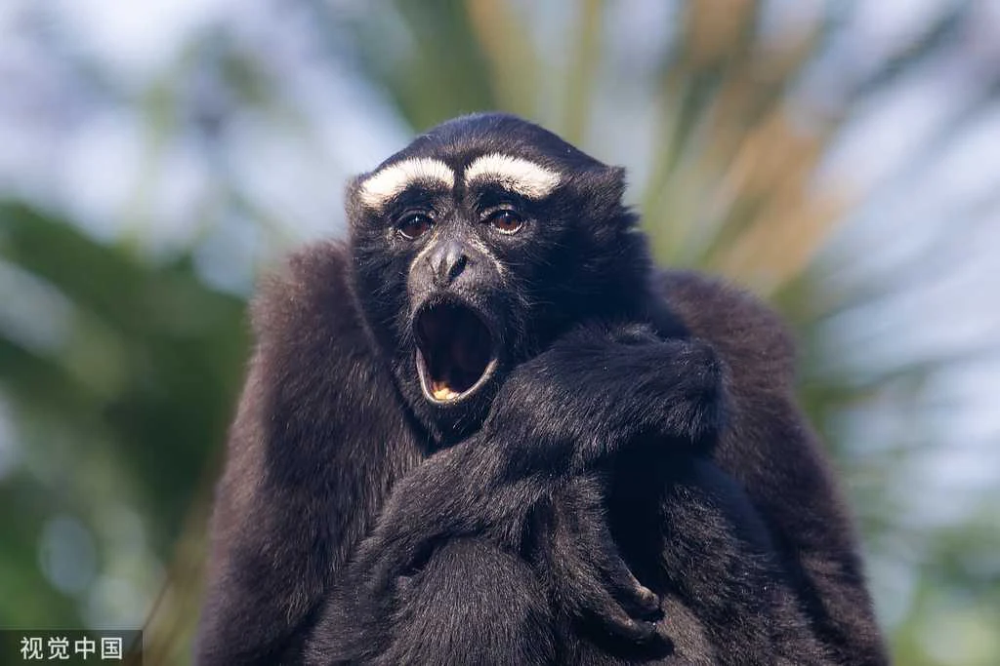
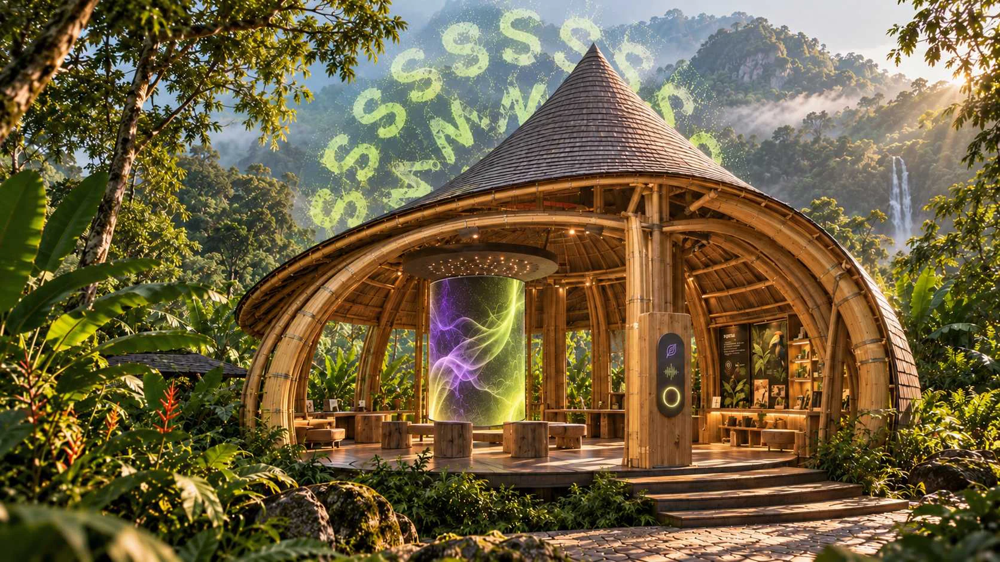
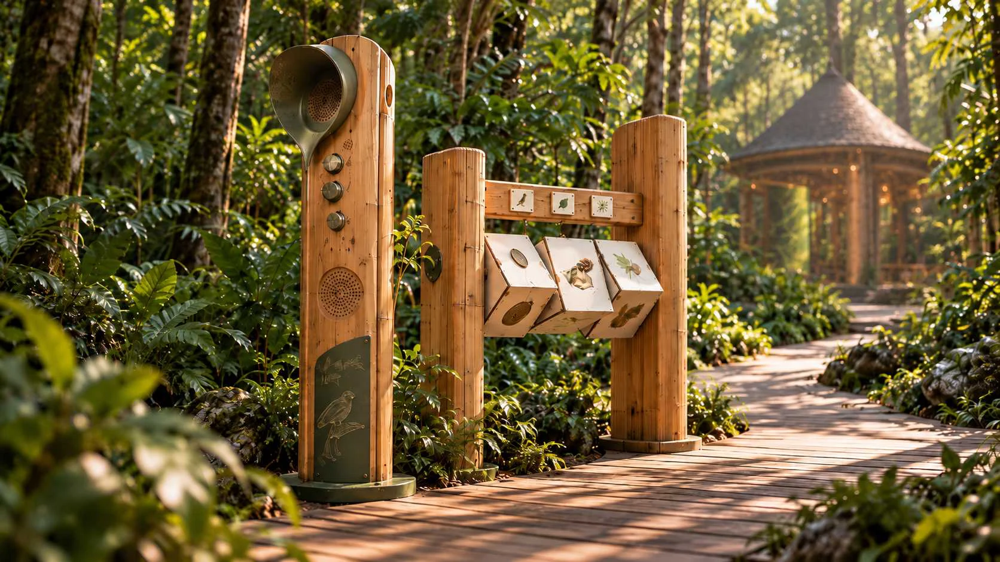
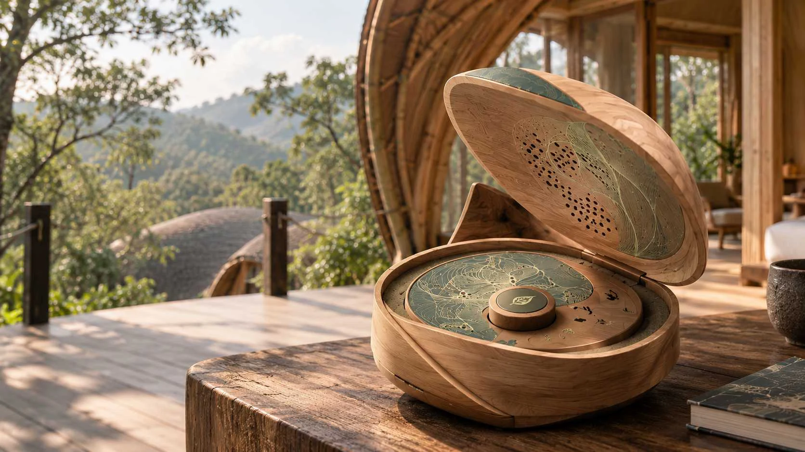

FIELD NOTES / HAINAN RAINFORESTA — SILENCE / 静默森林从不安静。
森林从不安静。
只是我们，尚未听见。
枝叶之间，生命以声音彼此回应。那些不易被看见的鸣叫，构成了雨林最真实的日常。

FIELD NOTES / HAINAN RAINFOREST枝叶之间，生命以声音彼此回应。那些不易被看见的鸣叫，构成了雨林最真实的日常。
循着声音，认识雨林里的它们。
让一次凝视，成为重新聆听的开始。
移动、轻触或拖动画面，
让节点聚合，让纹样生长。
在指尖与声纹之间，感受一次自然的共鸣。
从林间的沉浸式聆听，到掌心的声音记忆。
让自然的回响，在每一次相遇中延续。


